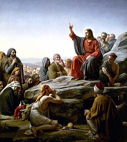

The most basic part of Christianity is the belief in Jesus as the Son of God and Messiah (Christ).
Christians believe that, as the Messiah, Jesus was anointed by God as ruler and savior of all people. Christians also believe that Jesus' coming was the fulfillment of messianic prophecies of the Old Testament. The Christian belief of the Messiah is much different than the contemporary Jewish concept. The main Christian belief is that, through the death and resurrection of Jesus, sinful humans can be reconciled to God. Though this, they believe they are given salvation and the promise of eternal life.
There have been many theological disagreements over the nature of Jesus over the first centuries of Christian history. But Christians generally believe that Jesus is God incarnate and "true God and true man." Jesus, having become fully human, suffered the pain and temptations of a mortal man, but he did not sin. As fully God, he defeated death and came back to life again.
From what the Gospels of Matthew and Luke say, Jesus was conceived by the Holy Spirit and born from the Virgin Mary. Only little of Jesus' childhood is written in the canonical Gospels, but infancy Gospels were popular in antiquity. But the time of Jesus' adulthood the week before his death are written much about in the Gospels. Some of the Biblical writings of Jesus' ministry are: his baptism, miracles, preaching, teaching, and deeds.